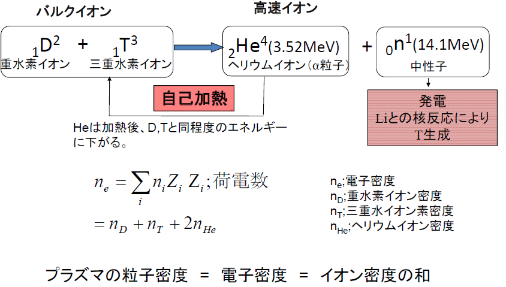
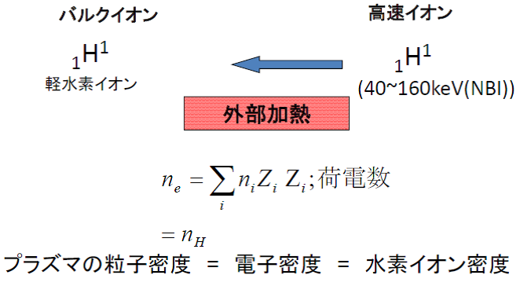
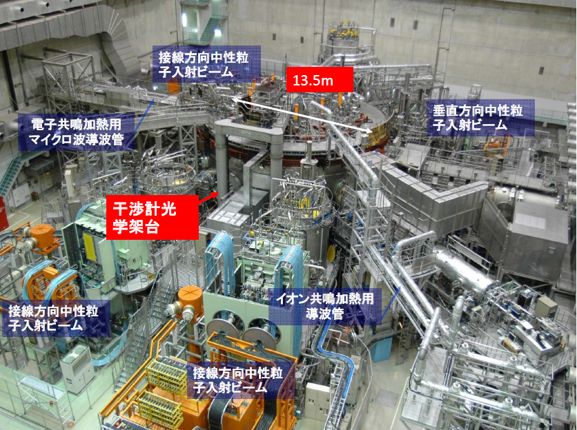
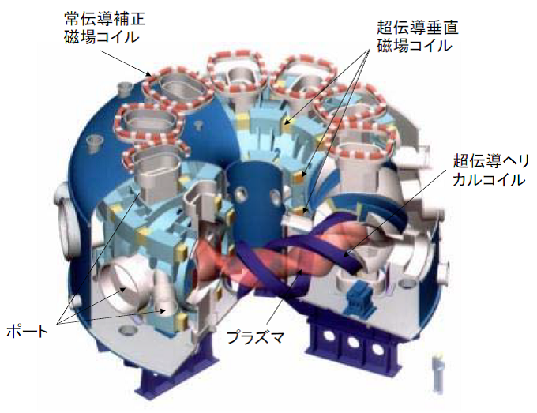
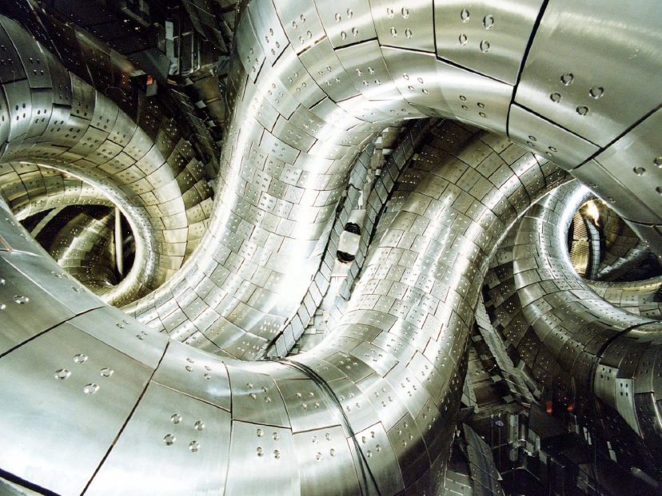

3-1. 核融合の歴史
核融合科学研究所の大型ヘリカル装置のお話をする前に、まずは核融合研究の歴史について簡単にお話ししましょう。「核融合とは」の頁の表1-1に示したように、核分裂による原子力発電の開発に比べて核融合を用いた発電技術は、非常に長い間研究開発されているにもかかわらずいまだに発電実証に至っていません。核融合の歴史を概観してみましょう。表3-1に核融合の研究開発の歴史を示します。
表3-1
1950年代
- 磁場閉じ込め核融合の提案
- 1958年 第1回核融合エネルギー会議。研究の公開が決まる。
1960年代
- 1961年 第1回IAEA 国際会議［核融合研究は、いま煉獄の時代にある］
多くの閉じ込めコンセプトが試される。
旧ソビエト連邦でトカマクが提唱。画期的な結果を得る(1968年)。ただし、当時の西側諸国には信用されなかった。イギリスのカラム研究所がレーザートムソン散乱装置を持ち込み結果（1keV）を確認。
1970年代
- 研究の主流はトカマクに。
1980年代
- 大型トカマク装置(JET, JT-60, TFTR)が建設される。
- 日本で中型ヘリカル装置ヘリオトロンＥの実験が始まる。
1990年代
- 国際協力による国際熱核融合炉（ITER）の設計が始まる。
- 大型ヘリカル装置の建設が始まる。（1998年実験開始）
2000年代以降
- ITERの建設始まる。ヘリカル装置も健闘。シミュレーション技術が発達し実験と理論の詳細な比較が可能になる。
- 2016年 ドイツで超伝導大型ステラレーター ベンデルシュタイン7-Xの実験が開始
- 2017年 大型ヘリカル装置で重水素を用いた高性能プラズマ実験を開始
- 2024年 量子科学技術研究開発機構超伝導トカマクJT-60SAが実験開始
- 2025年 ITERが実験開始
核融合の研究は実はアルゼンチン発の奇妙な新聞発表がきっかけとなります。1951年当時のアルゼンチンの大領領であったペロンが“我が国はウランを必要としない新しい原子力発電を開発した。”との声明を出したのです。この発表は当時核融合を用いた水素爆弾の開発に取り組んでいた米国と旧ソ連に大きな衝撃を与えました。この発表を聞いた米国の天文学者スピッツアーはこの発表は“ガセネタ”であると見抜きましたが、この報道をきっかけとして高温プラズマを磁場で閉じ込めるというアイデアを着想したのです[6]。そして1950年代の初頭に磁場閉じ込め核融合の研究が始まりました。核融合研究は最初の10年程度は進展に乏しく1961年国際原子力機関(International Atomic Energy Agency; IAEA) 主催の第一回プラズマ物理と制御核融合国際会議（ザルツブルグ）において旧ソ連で核融合研究を率いていたアルツイーモビッチが会議の締めくくりの講演で［核融合研究は、いま煉獄（れんごく）の時代にある］と述べました。煉獄というのはつらい時期の事を指し、語源はカトリックの教典によります。人が死んだあと天国に行くためには生前犯した罪を償わなくてはならず霊魂が天国に入る前に一時苦しみを受ける場所のことです。多くの努力にもかかわらず研究が進展していなかったということです。
転機となったのは1968年の旧ソ連での実験です。トカマクという新しいコンセプトがソ連で発案されました。この発案者はノーベル“平和賞”受賞者のサハロフ博士だと言われています。トカマク(tokamak)とはロシア語で“強力な磁場の容器“の頭文字をとった言葉です。それまでの磁場閉じ込めプラズマは電磁石で閉じ込め磁場を作っていましたが、トカマクではドーナツ状のプラズマを形成し、ドーナツの軸に沿ってプラズマ中に電流を流し、そのプラズマ電流が生成する磁場を作って閉じ込め磁場を作るというコンセプトです。当時プラズマの温度が上がらなかった原因の一つは真空容器内の多くの不純物イオンの存在でした。核融合は水素同位体プラズマで起こしますが、真空容器を金属で作った場合金属材料（主に鉄）がイオン化してプラズマに混入したり、真空容器中に水蒸気を介して酸素が混入したりして、これらの必要ないイオン（よって不純物イオンと言います。）がプラズマを冷却して温度上昇の妨げになっていました。プラズマ電流は閉じ込め磁場を作るだけでなく、プラズマの抵抗が高い場合、電熱線が熱くなるようにプラズマの加熱に用いることもできます。不純物イオンがプラズマに混入するとプラズマの抵抗が上がり、その結果抵抗による発熱、すなわち加熱の効果上がるという好ましいフィードバックが起きプラズマの温度が劇的に上昇しました。そのほかに、当時電磁石の製作精度が十分でなくそのために外部電磁石を用いる手法では閉じ込め磁場をうまく生成できなかったということもあります。1960年代末は米ソ冷戦の真っただ中であり、旧ソ連と西側諸国との間では現在のような研究者交流はできませんでした。しかし、英国の核融合研究所であるカラム研究所がソ連のトカマクの結果を検証することを提案し、カラム研究所で開発したレーザートムソン散乱装置でソ連のトカマクプラズマの電子温度を計測しました。その結果、彼らが発表していたように電子温度が1000万度（1keV）に達していることが明らかになりました。この結果に基づき、その後世界中の主要国では磁場閉じ込め核融合はトカマクが主流となったわけです。一方日本ではトカマクとヘリカルの二本立てで研究を行っています。
3-2. 高温プラズマの閉じ込め原理
ここもう一度核融合反応について復習しましょう。図2－1(a)に示すように重水素イオンと三重水素イオンの核融合反応でヘリウムイオンと中性子が生成されます。重要なのは、イオンや電子といった荷電粒子は磁力線に巻き付く性質があるということです。この性質を使って重水素イオン、三重水素イオンを閉じ込め、さらには核融合反応で生成されたヘリウムイオンを閉じ込めます。図2－6に示すように10keV（1億度）の温度で核融合の反応断面積が最も大きくなります。核融合炉ではまず、マイクロ波を用いた電子共鳴加熱や高いエネルギーを持つイオンビーム（将来の核融合炉では重水素イオンビーム）により加熱し、プラズマの温度を高くします。いったん核融合反応が起きるとさらにエネルギーの高いエネルギーを持つ3.52MeV（350億度）ヘリウムイオンが生成され、これがプラズマを追加熱します。ヘリウムイオンによる追加熱が支配的になり持続的に行われると外部加熱は必要ありません。この条件を自己点火条件と呼び、密度は1020個/m3（100兆個/cm3）、温度10keV（約1億度）以上のプラズマを数秒閉じ込めることが必要です。ところでプラズマの状態を表すのに密度と温度を使います。特に密度は1020個/m3（100兆個/cm3）といってもどのような密度か見当がつかないかもしれませんね。密度は単位体積当たりの粒子の数ですが、プラズマの場合重要なのは核融合反応を起こすための水素イオンの密度です。イオンの密度は直接の計測が困難なのでプラズマが電気的に中性であるという条件を使って、計測が容易である電子密度を用いて評価します。もしプラズマが完全な水素プラズマである場合、水素の電荷は1なので電子密度はイオン密度に等しくなります。ただし、不純物イオンが存在する場合はイオン密度は電子密度より小さい値となります。1020個/m3は大型ヘリカル装置をはじめとして多くの実験装置で達成されている密度ですが現在行っているプラズマの密度としては高い値です。しかし、我々の空気の密度は0度1気圧で2.7×1025 m−3(ロシュミット数)であり核融合プラズマの密度よりはるかに高い値です。もともとプラズマは高真空で生成するものなので必然的にプラズマ密度は大気中の密度よりはるかに低い値となります。温度についても注意が必要です。プラズマの温度を表すのに℃（摂氏温度）またはK（絶対温度）ではわかりにくいので電子ボルトeVを用います。1eVとは電子1個を1Vの電位差で加速した時に得るエネルギーで、これは1eV=11600Kに対応します。また、気体やプラズマの温度は単一の温度を持っているのではなく、あらゆる温度（エネルギー）を持った成分が存在し、その統計的な平均値が通常温度と呼ばれています。統計分布は熱平衡に達した場合正規分布（マクスウェル分布）になることが知られており、そのエネルギーを横軸に取った時の分布の幅で温度を定義します。図3－1で熱平衡に達して分布関数が正規分布（マクスウェル分布）になっているイオンをバルクイオン（bulk ion, bulkは“大部分“の意味）と呼びます。一方、核融合反応で生成されたヘリウムイオンは生成直後は熱平衡に達しておらずこれは高速イオンと呼ばれます。高速イオンはバルクイオンを加熱することにより最終的にはバルクイオンと同程度の温度となり速度分布関数も正規分布となります。核融合炉において加熱の役目を終えて減速したヘリウムイオンはもはや核融合反応にとっては役に立たず、重水素と三重水素のプラズマを希釈してしまうので、ヘリウム灰と呼ばれます。一方、現在のプラズマ実験では図2－2に示すように軽水素または、重水素で実験を行っており、安全上の理由と機器の放射化を防ぐために三重水素は用いないためＤＴ核融合反応によるヘリウムイオンは生成されません。よって、図3－2に示すように中性粒子ビームによる外部加熱で高速イオンを入射します。外部から入射した高速イオンを核融合反応で生成された高速ヘリウムイオンに見立てて高速イオンの閉じ込めや挙動についての研究がされています。


もう一つ重要なのが閉じ込めという概念です。よく誤解があることなのですが、プラズマの閉じ込め時間とプラズマの維持時間は全く異なります。大型ヘリカル装置ではおよそ1時間の定常放電を達成していますが、これはプラズマを維持した時間が1時間ということで、エネルギーの閉じ込め時間はおよそ0.1秒程度です。大型ヘリカル装置では1時間の間、電子共鳴加熱を行う77GHz,154GHzのマイクロ波やイオン共鳴加熱を行う40~80MHzの高周波を連続してプラズマに入射することができるのでプラズマを"維持"することはできましたが、これらの加熱を切るとプラズマのエネルギーは0.1秒程度で減衰します。電気ポットで例えると、電源につないで水温を一定に保ち続けている時間が維持時間、電源を切ってある温度を下回るまでの時間が閉じ込め時間です。自己点火条件で必要な閉じ込め時間数秒というのは磁場閉じ込めプラズマにとってはかなり長い閉じ込め時間です。
みなさんの周りに常に恋人がいる、だけど相手がよく変わるという人はいませんか？これが定常状態です。すぐに好きになってしまうけどアッという間に冷めてしまう。これが愛情の閉じ込めが悪いということです。一人の相手を長い間好きになる。これが愛情の閉じ込めが良いということです。ちなみに先生の愛情の閉じ込め時間は長いですよ！！
以上を理解したうえで自己点火条件（密度1020個/m3（100兆個/cm3）、温度10keV（約1億度）以上のプラズマを数秒閉じ込め）をどのような値か想像してみてください。この三つの値を同時に達成するのはかなり大変です。
次に動画を使って磁場を用いたプラズマの閉じ込め原理について簡単にご説明しましょう。図3－3のリンクをクリックして動画をご覧ください。緑色の磁力線に正電荷を持ったイオンが巻き付いているのが分かります。実際にはイオンだけでなく電子も巻き付きます。この場合電子の回転する方向はイオンと逆方向になります。直線状の磁力線だと磁力線の端からプラズマが逃げていくのでプラズマの端がなくなるように磁力線をドーナツのように環状につなぎます。ただし、残念ながら磁力線をリング状につなぎだけではプラズマをうまく閉じ込めることができません。動画でイオンが逃げて行っているのが分かりますね。これは環状に磁力線をつなぐとどうしても環の直径の外側に行くにつれて磁力（磁場強度）が弱くなることと、磁力線が曲がっている効果でイオンおよび電子が上下方向に移動しその結果上下方向に電場が形成されて、電場と磁場のローレンツ力により電子およびイオンが外に吐き出されるためです。そこで磁力線をひねると、上下に分かれて溜まろうとする正イオンと負イオンを入れ替えることができて縦方向の電場を打ち消し合うので、その結果プラズマを良好に閉じ込めることができます。
トカマク型にしろヘリカル型にしろ環状の磁力線をひねることが重要で、トカマクはプラズマ電流が形成する磁場を用いるのに対してヘリカル型は外部電磁石（外部コイル）のみで環状にひねった磁場を形成します。両者ともに一長一短があります。トカマクは3.1で述べたように画期的な成果を上げたわけですが、プラズマ電流を用いるためにはプラズマ電流を維持することが必要になります。トカマクにおいてはこのプラズマ電流の維持が大きな研究課題になっています。特に、プラズマ中で大きな電磁的な不安定性が発生した場合、プラズマ電流が突然遮断されその結果、巨大な電磁力が装置にかかり、装置が損傷するというリスクがあります。一方、ヘリカル系ではコイルに電気を流しておけば閉じ込め磁場を維持できるのでトカマクにおける破壊的なプラズマ電流の遮断は起きません。しかし、リング状のねじれた磁場を生成するのには複雑なコイル形状が必要で精度の高いコイルの製作技術が必要になります。また、ヘリカル系は閉じ込め性能については残念ながらトカマクに及びません。これは、ヘリカル型における磁力線の構造がトカマクより複雑になり、これが閉じ込め性能の劣化を引き起こすからです。
現在磁場閉じ込め核融合研究の主流はトカマクで、世界でおよそ8割程度の研究者はトカマクに従事していると思います。日本ではヘリカル型の研究が1950年度より継続して行われており、半分程度の研究者がヘリカル型の研究に従事しています。将来の核融合炉がどちらのタイプになるかは研究者により議論が分かれるところですが、二つの路線を追求することにより、核融合炉としてのオプションも増え、研究の裾野も広がり、結局は核融合の研究の進展に寄与すると思います。
3-3. 大型ヘリカル装置
日本におけるヘリカル型の研究は1950年代に京都大学の宇尾光治先生により京都大学において始まりました。太陽神ヘリオスにちなんで名づけられたヘリオトロン装置はヘリオトロンAから始まり、1980年には当時としては最も大きなヘリカル型装置ヘリオトロンＥが運転を開始しました。私（田中）は共同研究者として博士課程在学中にヘリオトロンＥで実験を行っていました。宇尾光治先生の後を引き継いだ飯吉厚夫先生（現中部大学総長、初代核融合科学研究所所長）、本島修先生（前ITER機構長、三代目核融合科学研究所所長）たちのグループはヘリオトロンＥをさらに大型化した大型ヘリカル装置(Large Helical Device; LHD)の建設を提案し、岐阜県土岐市に建設することになりました。当時日本の大学の核融合研究者で大型装置を作るという議論があり、どの閉じ込めコンセプトがよいかという議論がありました。最終的にはトカマクとヘリオトロンの二案が残り,喧々諤々の議論の末ヘリオトロン型の装置を建設することに決まりました。

図3－4にLHDの外観を示します。中心にあるのがLHDでその周りに多くの加熱装置（中性粒子入射ビーム装置、共鳴加熱用電磁波を伝送するための導波管）、真空ポンプそれから種々の計測装置が配置されています。LHDの大きさはおよそ奈良の大仏と同程度の大きさです。写真だけではわかりにくいので図3－5にLHDのイラストを示します。赤透明のひねっているドーナツがプラズマです。「核融合とは」の頁の図2－8(b)のドーナツによく似ていますね。プラズマの周りの青いらせんが超伝導ヘリカルコイルです。コイルはほとんどが超伝導コイルですが、磁場補正用のコイルのみ常伝導コイルを使っています。真空容器に煙突がたくさんついていますがこれはポートと呼ばれるもので、ポートから加熱用のビームや電磁波を入射したり、計測用のレーザーの入射、プラズマからの発光を観測します。

核融合研ホームページより
LHDを建設するにあたり、コイルを今までの多くの装置で使われていた常伝導コイルにするか液体ヘリウムで極低温まで冷却して電気抵抗をゼロにする超伝導コイルにするかについても議論がありました。常伝導コイルにすると建設コストは安くなります。超伝導コイルの場合は建設コストが上がるだけでなく当時の技術力で製作できるかは必ずしも確かでありませんでした。結局、将来の核融合炉で連続運転を行うには超伝導コイルが必要であり、将来のための技術開発を研究の目的とし超伝導コイルで磁場閉じ込め装置を建設することになりました。研究開発をするうえでは重要な判断をしなくてはいけないことがあります。それまでの研究成果と将来性を考えたうえで判断するわけですが、多分に判断をする方の性格も影響するかもしれません。飯吉先生と本島先生はお二人とも存じ上げていますが、飯吉先生は温厚そうでありながら負けず嫌いで物事を攻める方で、本島先生は極めて慎重に仕事を進められる方でした。超伝導装置を作るという判断は正しかったと思います。超伝導コイルを用いることによりコイル電流を連続して流すことができます。LHDの実験は通常毎年5か月程度、秋から冬にかけて行われます。これは電力需要がひっ迫する夏を避けているためです。実験期間中は常に液体ヘリウムでコイルを超電導状態にしておきます。毎日の実験は朝9時ごろにコイル電流を立ち上げ、夜の7時前に実験を終了しコイル電流を立ち下げます。定常実験を行う場合は最長1時間ごとの放電となりますが、高い温度、密度などを目指した実験は3分ごとに5~10秒程度の短パルス実験を行います。この3分間隔は計測データを取り込みコンピューターのハードディスクに書き込むのに必要な時間です。一方、常伝導コイルを用いた実験では一度コイルに通電するとコイルの抵抗が有限であるため熱が発生し、放電終了後コイルの温度が下がるまで待つ時間必要となります。ヘリオトロンＥのような中型装置でもコイルの冷却時間には10分程度必要で、大型の装置になるとさらに長い時間が必要となります。超伝導コイルを用いることにより定常実験以外にもLHDでは短パルスの実験を数多くこなすことができ、その結果短期間に膨大なデータを蓄積することができました。
図3－6にＬＨＤの真空容器の内部の写真を示します。プラズマが閉じ込められる真空容器の外側に超伝導コイルが図に示すようならせん上の真空容器の中に固定されています。

最後に実際のLHDのプラズマをお見せしましょう。図3－7のリンクをクリックして動画をご覧ください。これは観測用のポートから計測したプラズマの発光です。この発光は主に水素原子からの発光です。発光を観測することによりまずはプラズマが維持されているかどうかが分かります。LHDの実験ではショットごとにこのような映像を目視してプラズマが点いているかどうかを確認することができます。皆さんも少しばかりＬＨＤの実験を体験できたでしょうか？では、次に磁場閉じ込めプラズマではどのような実験を行っているのかについてお話しします。トップページより“プラズマ実験”の頁に進んでください。
参考文献
- ロビン・ハーマン著、見角鋭二訳 “核融合の政治史”、朝日新聞社
（参考文献6は核融合研究の歴史を記述した一般向けの書籍ですが、1996年の出版であり、それ以降の核融合の歴史には言及していないことにご注意ください。表3-1に示すように1990年代の後半以降、大型ヘリカル装置も含めて重要な実験装置が運転を開始、または建設に着手しました。）